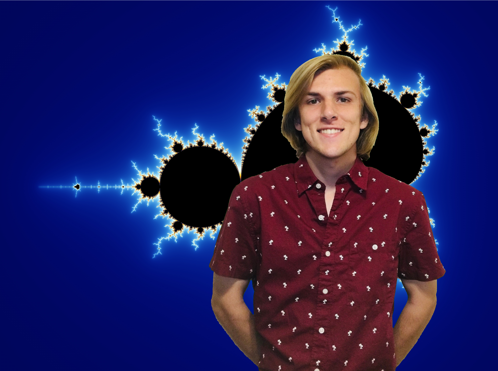

PhD Candidate · Computational Geometry · UNC Chapel Hill

About
I am a doctoral candidate at the University of North Carolina at Chapel Hill. My research is in computational geometry, with some additional work in human-robot interaction and numerical linear algebra. My work in computational geometry focuses primarily on the design and analysis of algorithms for enumerating non-crossing structures.
NP-Hardness of Non-Crossing Hamiltonian Path and Cycle in Non-Planar Graphs
38th Canadian Conference on Computational Geometry (CCCG) · 2026
Spatial Separation and Non-crossing k-chromatic Hamiltonian Paths and Cycles
38th Canadian Conference on Computational Geometry (CCCG) · 2026
Enumerating Non-Crossing Hamiltonian Paths by Reachability Checks and Bidirectional Search
32nd Annual Fall Workshop on Computational Geometry (FWCG) · 2025
Drone Brush: Mixed Reality Drone Path Planning
ACM/IEEE International Conference on Human-Robot Interaction (HRI) · 2022
A Constant Time Algorithm for Solving Simple Rolling Cube Mazes
34th Canadian Conference on Computational Geometry (CCCG) · 2022
Accelerating the Distributed Kaczmarz Algorithm by Strong Over-relaxation
Linear Algebra and its Applications, vol. 611, pp. 334–355 · 2021